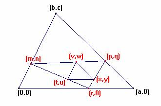
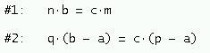
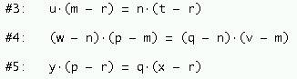
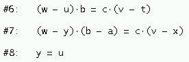
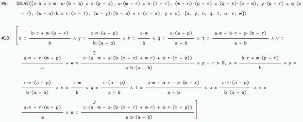
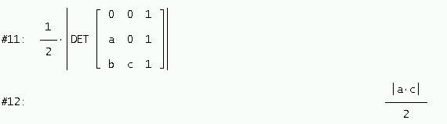
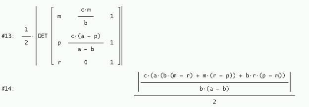
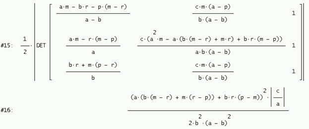
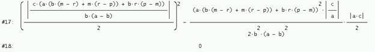

Problema 323
Dado el triángulo ABC, se
inscribe en él otro triángulo A´B´C´ y en él A´B´C´ se inscribe otro
A"B"C", de tal modo, que sus lados sean paralelos a los lados de
ABC. Se pide calcular el área de A´B´C´ en función del área de los triángulos ABC
y A"B"C".
Sin pérdida de generalidad, la configuración a estudio es esta:

Trabajando con Derive 6, se imponen las condiciones siguientes:
los vértices A´,B´ y C´ descansan sobre los
lados del triángulo ABC

los vértices A´´, B´´ y C´´
descansan sobre los lados del triángulo A´B´C´

y los lados del triángulo A´´B´´C´´
son paralelos a los del triángulo ABC

A continuación se resuelve el sistema formado por estas 8 ecuaciones

Y se obtienen las áreas del triángulo ABC

del triángulo A´B´C´

y del triángulo A´´B´´C´´

Y ahora se comprueba la siguiente relación entre áreas:

es decir Área(A´B´C´)2=Área(ABC)*(Área(A´´B´´C´´)
Valdepeñas
3 de Julio 2006